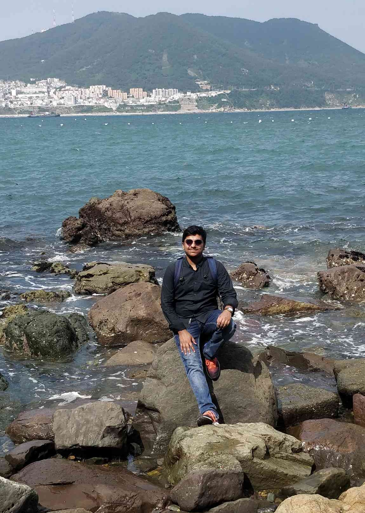
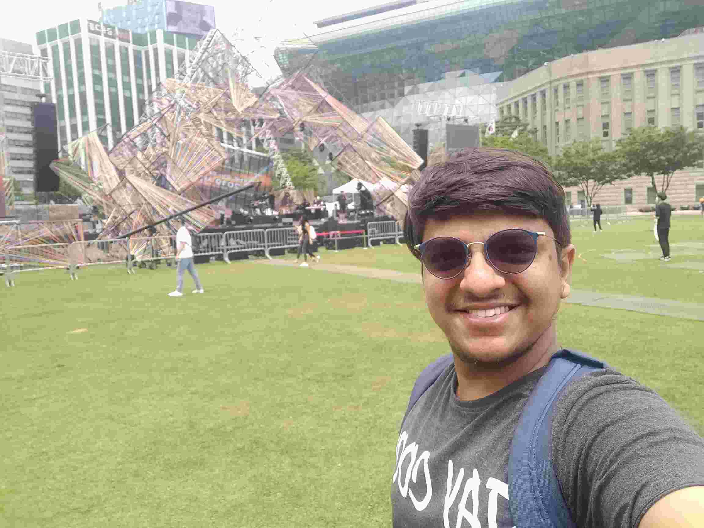

August 20, 2019
Raghav Garg, an undergraduate student in the
Department of Computer Science and Engineering from the Y16
batch, interned at Samsung Electronics, South Korea in the
Summers’19. In this blog, he describes the shortlisting
procedure of his internship and also gives a glimpse of work
and life during his internship in South Korea.
Samsung Electronics Co., Ltd. is a South Korean
multinational electronics company headquartered in Suwon,
South Korea. Samsung is a major manufacturer of electronic
components such as lithium-ion batteries, semiconductors,
chips and flash memory devices for clients such as Apple,
Sony, HTC and Nokia. Samsung has been the world's largest
television manufacturer since 2006, and the world's largest
manufacturer of mobile phones since 2011. It is also the
world's largest memory chips manufacturer. Samsung
Electronics is the world's second largest technology company
by revenue.

Hello guys and gals! I am Raghav Garg pursuing a Computer
Science major and I went to Samsung South Korea for my summer
internship in 2019 and worked with the AI R&D team under
Mobile Division in Suwon. Through this post I try to give you
a better insight of not only how life is inside Samsung Korea
but how South Korea is in general.
How to Get into Samsung Korea?

I got into Samsung Korea through the SPO Internship Programme
and as far as I am aware this is the only way to get there
apart from working at Samsung Bangalore which probably gets
you a training programme in Samsung Korea.
Samsung Korea shortlists students on the basis of CPI and JEE
rank. Usually the ones with CPI > 9.5 or top JEE rankers in
CSE and EE get selected unless you have done exceptional in
Olympiads.
The shortlisted students then have to give a 3-hour coding
test which is not very difficult and brute force solutions to
recursive problems are also generally accepted.
The HR guys basically check if you are willing to try to adapt
to a new environment and whether you can manage minor
hiccups/problems in language and food. The technical round is
also not very exhaustive and you could clear it easily with
good data structures knowledge. The final shortlist is biased
a little towards high CPI and JEE rank but they do give a
decent weightage to your interviews.
How was Korea?
Korea is one of the few countries where you could gain a lot
in terms of experience. People are unusually quite unlike
Indians and often prefer to roam as couples or alone. They are
slightly shy and would try to avoid conversations if their
English is weak but all of them are very supportive. The
geography allows you to actually visit a lot of places in your
short internship period as the country is almost the size of
Delhi NCR. The weather was awesome throughout my internship
period and served as a cherry on the cake.
Any issues with Food or Language😣?

This is one of the major questions that trouble most people
going abroad and especially if you are going to an Asian
country like South Korea. Well then there is some good news
for you guys.
If you are a non-vegetarian then there is no problem at all.
There are a lot of delicacies to taste ranging from fish to
pork and much more. Even if you are a vegetarian like me,
there is nothing to fear. Samsung’s office in Suwon offers
vegetarian meals 3 times a day and the residence of the
employees is especially built by Samsung for Indians and
Bangladeshis and offers good Indian meals three times a day. I
had the best breakfast of my life there. Apart from that,
there are pizza shops inside the office and you would end up
eating there most often. So I would just say you would
absolutely have no worries regarding food if you are going to
Suwon.
Now let’s talk about Language. People talk in Korean there.
People are taught English but they are not very confident in
conversing in English as they don’t have a lot of experience
and so would most try to avoid conversations. But most people
you would have to talk to in office would be pretty good in
English and you will face no problem. You might have to make
extra effort in talking to locals. You will often end up using
Google Translate.
How was the work like?
 Samsung is one of the very few companies that give you the
freedom to choose your field of work. Whether you like IoT,
AI/ML, networks, cloud, Big Data or anything else, there is a
team which works on it. You are asked to submit a preference
list of your field of work and then they assign you the team
based on your preferences and your resume. Most people end up
getting one of their top two choices and are happy with it.
Samsung is one of the very few companies that give you the
freedom to choose your field of work. Whether you like IoT,
AI/ML, networks, cloud, Big Data or anything else, there is a
team which works on it. You are asked to submit a preference
list of your field of work and then they assign you the team
based on your preferences and your resume. Most people end up
getting one of their top two choices and are happy with it.
The work culture there is pretty flexible and they allow you
to choose your own projects (after discussions with your
mentor). It basically means the work is not just about
applying your pre-occupied knowledge but you can start working
on completely new topic by learning it from scratch.
They don’t usually expect groundbreaking work from interns but
they just want to check your technical knowledge and your will
to learn. Their main focus of the internship is to identify
good people who are able to adapt to their teams and would
love to work here so that they can give them Pre-Placement
Offers. This is so because projects of most people (NOT ALL!)
are not about deploying it on Samsung Platforms but to test
our technical knowledge.
Nostalgia
Overall it was a very nice experience with both intellectual
and monetary (LOL) benefits. You get to meet a lot of new
people and I still miss those coffee sessions and TT rounds
that we use to have all day around when we were not
working.
Cheers!!!